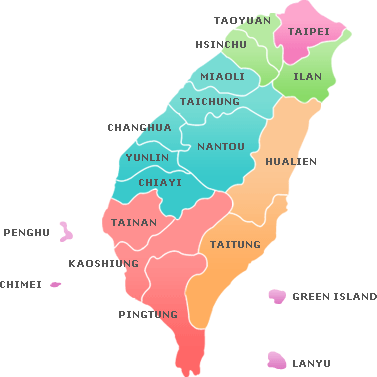

Here is where I live for 24 years.
Tainan (Hokkien POJ: Tâi-lâm), officially Tainan City, is a special municipality of Taiwan, facing the Formosan Strait or Taiwan Strait in the west and south. Tainan is the oldest city on the island of Taiwan and also commonly known as the "Capital City" (府城; Fǔchéng; Hú-siâⁿ) for its over 200 years of history as the capital of Taiwan under Koxinga and later Qing dynasty rule. Tainan's complex history of comebacks, redefinitions and renewals inspired its popular nickname "the Phoenix City".
